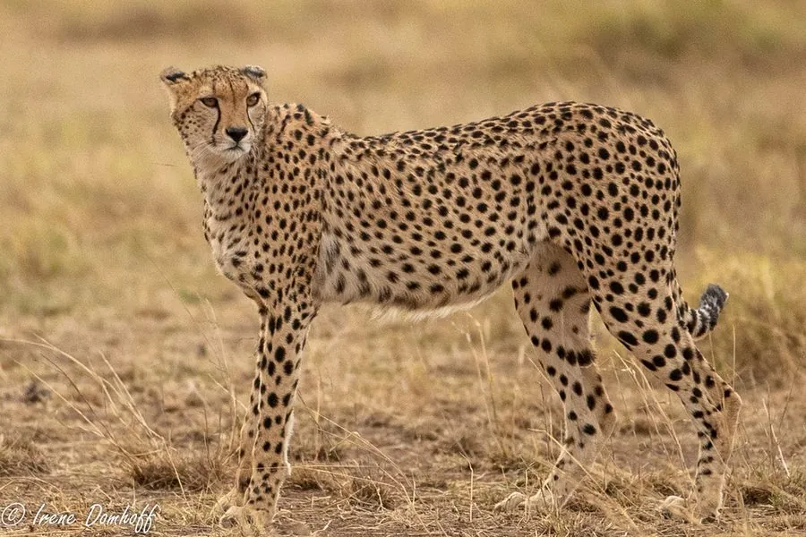

哺乳动物 · 动物界
猎豹 Acinonyx jubatus

陆地上跑得最快的动物，短距离冲刺时速可超过 100 公里，修长体形与不可伸缩的爪专为速度而生。
- 分类
- 门脊索动物门纲哺乳纲目食肉目科猫科属猎豹属
- 栖息环境
- 稀树草原、疏林与半荒漠，需要开阔视野和充足猎物
- 地理分布
- 非洲撒哈拉以南，伊朗有极少量亚洲猎豹残存
- 保护级别
- IUCN 易危（VU）
物种志
猎豹体长 1.1–1.5 米，尾长 0.6–0.8 米，体重 35–65 kg，体形修长轻盈。它的被毛为淡黄色，全身布满实心黑色小斑点，面部从内眼角到嘴角各有一条黑色“泪痕”；头小、胸深、腿细长，爪不能完全伸缩，像跑鞋的钉鞋一样抓住地面。
猎豹分布于非洲撒哈拉以南和伊朗的局部地区，栖息于稀树草原、疏林和半荒漠。它依靠速度捕猎，冲刺时速可达 100–120 km，但只能维持数百米，捕到猎物后必须尽快进食，否则会被狮子、鬣狗抢走。猎豹多在白天活动，视力极佳，常站在白蚁丘或倒木上瞭望；雌兽妊娠期约 90–95 天，每胎 3–5 仔。由于栖息地破碎、猎物减少和幼仔成活率低，猎豹被列为易危，部分亚洲种群极度濒危。
形态与习性
- 食性瞪羚等中小型有蹄类，偶尔捕食野兔和鸟类
- 体长1.1–1.5 m，尾长 0.6–0.8 m
- 体重35–65 kg
- 寿命野外约 10–12 年
- 繁殖妊娠期约 90–95 天，每胎 3–5 仔
- 速度冲刺时速 100–120 km，可持续数百米
- 爪半伸缩，抓地力强，利于高速奔跑
趣味知识
- 猎豹是陆地上跑得最快的动物，冲刺时速可超过 100 km。
- 它的爪不能完全缩回，像钉鞋一样帮助抓地奔跑。
- 面部两条黑色泪痕可减少阳光反射，帮助它看清猎物。
- 猎豹只能全速跑数百米，捕猎后必须尽快进食。